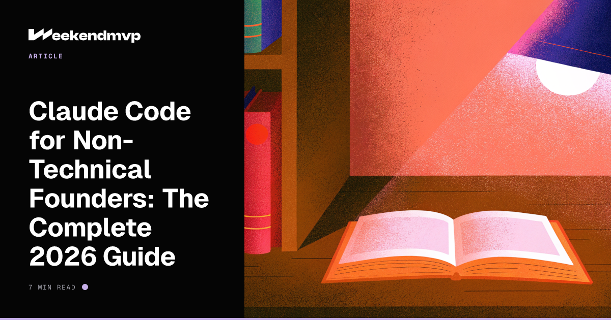

Claude Code for Non-Technical Founders
The complete 2026 guide to the AI agent that builds apps from your terminal—even if you've never written a line of code.

Is This You?
➔You keep hearing about Claude Code but every tutorial assumes you already know what a terminal is.
➔You've tried Bolt or Lovable, hit a wall, and people keep telling you to "just use Claude Code."
➔You've watched developers ship a working app in an afternoon and wondered what tool they were using.
➔You want to stop paying $5,000 to a freelancer for changes you should be able to make yourself.
By the end of this guide, you'll know what Claude Code is, how to install it, and how to ship your first real thing with it.
Why This Tool Is Different
Most AI coding tools live in a browser. You type, you wait, you copy-paste. Claude Code is different. It lives on your computer, inside your project folder, and it has hands.
It can read every file in your project. It can edit files. It can run commands. It can install dependencies, run your tests, fix the bugs they expose, and push the result to GitHub. You're not pasting code anywhere—you're directing an agent that does the work.
As of February 2026, around 4% of all public GitHub commits—roughly 135,000 per day—are authored by Claude Code. That's a 42,896× jump in 13 months. The tool is mainstream. The question is whether you're using it yet.
What Claude Code Actually Is
Claude Code is a command-line tool from Anthropic. You install it once, then you talk to it inside a terminal window the same way you'd talk to a smart contractor who happens to live in your project folder.
A typical session looks like this:
$ claude
> Add a contact form to my landing page that emails me when someone submits it.
…Claude reads your files, writes the form, wires up the email, and tells you what it did.
No drag-and-drop. No clicking through menus. Just a conversation with something that can actually change your project.
Need an idea worth building? Start there first.
Browse Startup IdeasWhat You Need Before You Start
Three things. None of them are hard.
1. A computer that can run a terminal
Mac, Linux, or Windows (with WSL). Yes, your laptop has a terminal. On Mac it's called "Terminal" and it's already installed. Don't be scared of it—you'll spend most of your time typing in plain English.
2. Node.js (the runtime that powers most modern web tools)
Go to nodejs.org and download the LTS version. It's a normal installer—next, next, finish. You'll never think about it again.
3. An Anthropic account
A Claude Pro subscription (around $20/month) is the simplest option—it includes Claude Code usage. You can also pay per token through the API, but Pro is fine to start.
Total setup cost: $20/month. Total setup time: under 15 minutes.
Your First Hour with Claude Code
Install it
Point: One command. Done.
Explanation: Open Terminal, paste that line, press Enter. The first time you run claude, it'll ask you to log in with your Anthropic account through your browser. After that, you're ready.
Make a project folder
Point: Claude Code works on a folder. So make one.
cd my-first-app
claude
Explanation: The empty folder is your project. claude drops you into the chat. Anything you ask from now on happens inside that folder.
Ask for something specific
Point: Vague prompts get vague results. Be a good product manager.
Bad prompt: "make me a website"
Good prompt: "Build a one-page landing page for a tool called NoteCleanup. Headline: 'Turn messy meeting notes into action items.' Below that, a screenshot placeholder, three short benefits, and an email signup form. Use Tailwind CSS. Dark theme."
Explanation: Claude will plan, write the files, run the dev server, and tell you the URL to open in your browser. You'll have a working page in under 5 minutes.
Iterate in plain English
Point: Don't open the code. Just keep talking.
Examples:
- "Move the headline up. Make the form orange."
- "Save form submissions to a Supabase table called signups."
- "Deploy this to Vercel and give me the URL."
Explanation: Each request takes 30–90 seconds. You're not coding. You're reviewing. That's the whole game.
What This Looks Like in the Wild
Some real numbers from the last 12 months:
Vulcan: $11M seed, mostly non-technical team
A YC startup with three founders—only one of whom was "properly technical"—used Claude Code to build software for state and federal government contracts. They closed an $11M seed round.
Solo dev, 36 hours, $285 MRR by week one
One indie developer built a niche analytics dashboard with Claude Code in 36 hours, launched it to a small email list, and had 15 paying users at $19/month within seven days.
25% of YC's latest batch: 95%+ AI-generated codebases
Y Combinator data shows that a quarter of their most recent batch shipped products where 95% or more of the code was written by AI agents like Claude Code. The barrier between idea and product is gone.
Pick the idea before you pick the prompt.
Browse 100+ research-backed startup ideas with build prompts you can paste straight into Claude Code.
Browse Startup IdeasMistakes Non-Technical Founders Make (and How to Avoid Them)
Mistake 1: Treating it like a chatbot
Fix: It's not ChatGPT. It edits real files on your computer. Always work inside a project folder you can throw away. When in doubt, run git init first so you can undo anything.
Mistake 2: Skipping the plan
Fix: Before you build, ask: "Can you write a one-paragraph plan for what we're about to build, then wait for me to confirm?" You'll catch misunderstandings before they become 200 lines of wrong code.
Mistake 3: Going too big
Fix: Don't ask for "a full SaaS app." Ask for one screen. Then the next. Small chunks let you steer. Big chunks let you crash.
Mistake 4: Ignoring what it says
Fix: Claude Code summarises what it changed after every step. Read it. If something looks wrong, push back: "Wait, you also touched the pricing page. Why?" It will explain or undo.
FAQ
Do I need to learn to code first?
No. But knowing the difference between a "frontend" and a "backend"—or what "deploy" means—will make your prompts cleaner. Build a few small things and you'll pick it up by osmosis.
How is this different from Cursor or Bolt?
Cursor is an editor with AI inside it. Bolt is a browser sandbox. Claude Code is an agent in your terminal that can do things on your machine—run installers, push to GitHub, deploy to Vercel. It's the most autonomous of the three. We compared all three in Vibe Coding 101.
What does it actually cost?
Claude Pro is $20/month and includes Claude Code with usage limits that are generous for solo founders. Heavy users on the API typically spend $20–$200/month depending on how much they build.
Can I build a real business with it?
Yes. Vulcan raised $11M. YC's latest batch is 25% AI-built. The cost to launch a usable software product in 2026 has dropped to about $1,000 in tools, hosting, and API credits.
What if it breaks something?
Use Git from day one. Every change Claude makes can be reviewed and reverted. If you don't know what Git is, ask Claude Code itself: "Set up Git in this folder and explain it to me like I'm five." It will.
TL;DR
- Claude Code = an AI agent in your terminal that builds and ships real apps
- Install: npm install -g @anthropic-ai/claude-code
- Cost: $20/month with Claude Pro
- Be specific in prompts. Iterate small. Use Git.
- Pick an idea, then start typing. The shipping is the easy part.
Want a human to walk you through Claude Code?
Book a 1:1 with John. We'll install Claude Code on your machine, set up the skills and workflows that match your project, and ship your first real thing together—live, screen-sharing, no fluff. For founders who'd rather skip the trial-and-error.
Book a Claude Code Setup Session (opens in new tab)
Don't read another tutorial.
Pick an idea and start typing.
Open the terminal. Type claude. Ship something this weekend.
Browse Startup Ideas